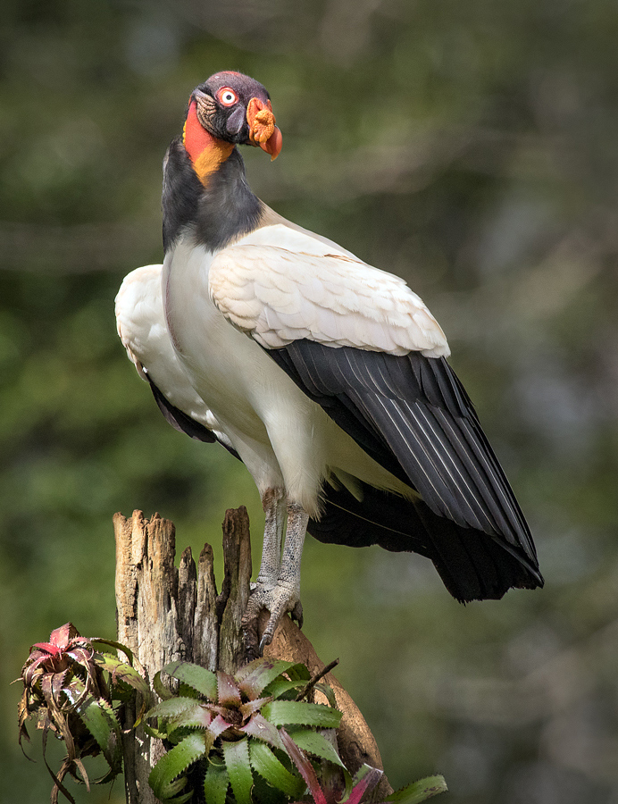

ZOPILOTE REY
Se distribuye desde el sureste de México hasta el norte de Argentina. Habita principalmente los bosques tropicales de tierras bajas no perturbados, así como sabanas y praderas que se encuentran en la cercanía de estos bosques. También se les puede ver cerca de pantanos o en zonas pantanosas dentro de los bosques. Se alimenta de todo tipo de carroña, desde cadáveres de ganado hasta peces varados y lagartijas muertas. En el caso de su comportamiento reproductivo no se sabe mucho, pero se reproduce durante estaciones secas y solo ponen un solo huevo por temporada por lo que su perpetuación sea más lenta. El zopilote rey se encuentra en la fase de preocupación menor a nivel mundial, pero en el caso del estado de Tabasco se encuentra en peligro de extinción esto se debe a la destrucción de su hábitat por medio de la deforestación y de igual manera afecta mucho lo que es la caza. En el estado de Tabasco solo se conserva esta especie en cautiverio para ayudar a no desaparecer en la región.